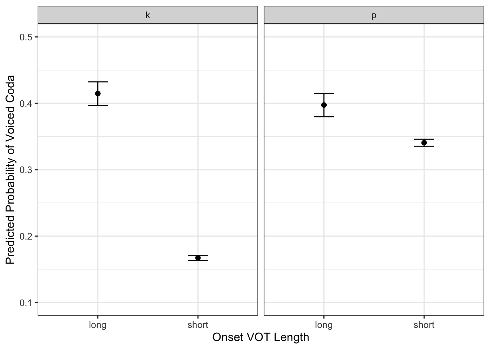
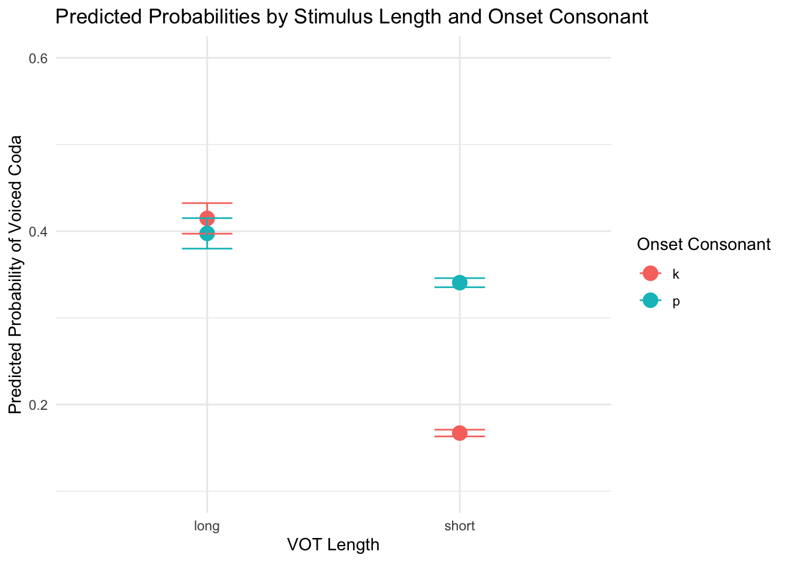
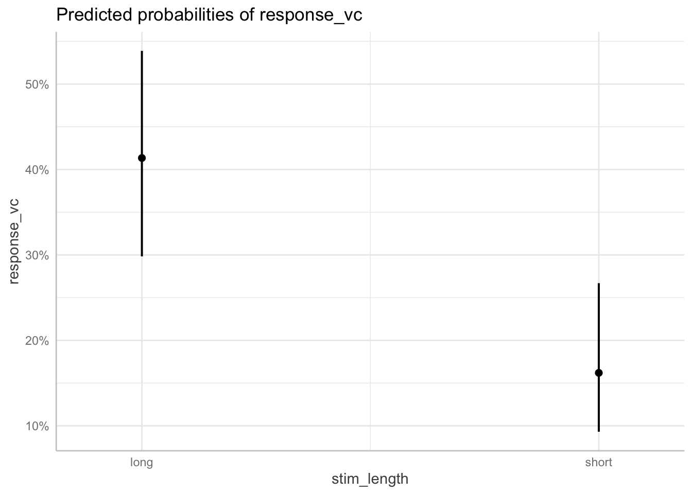
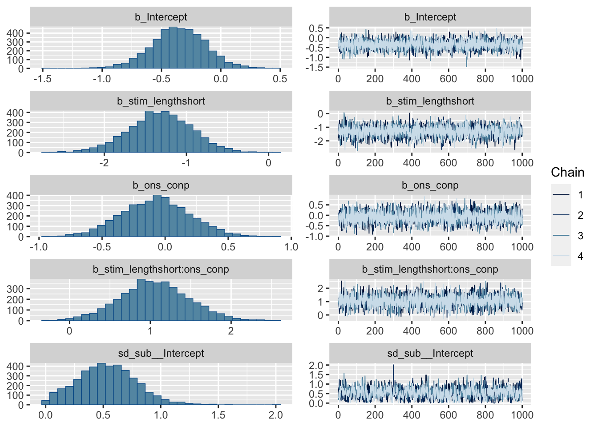
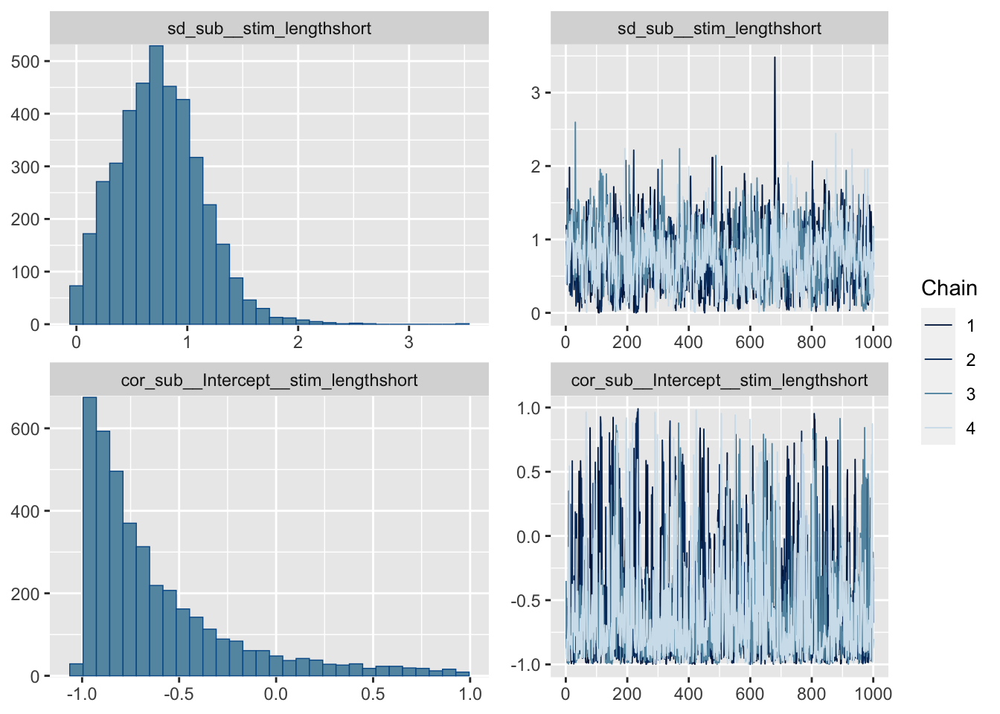
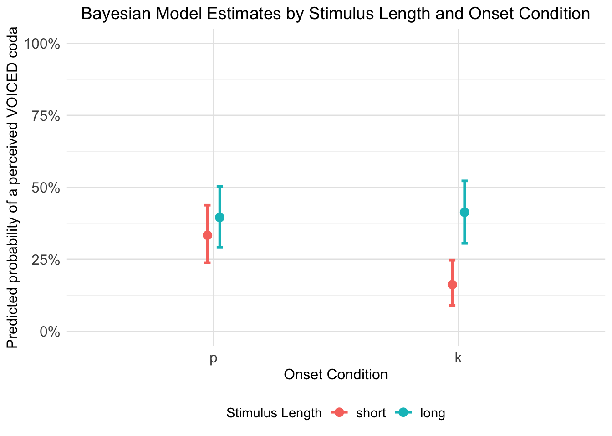
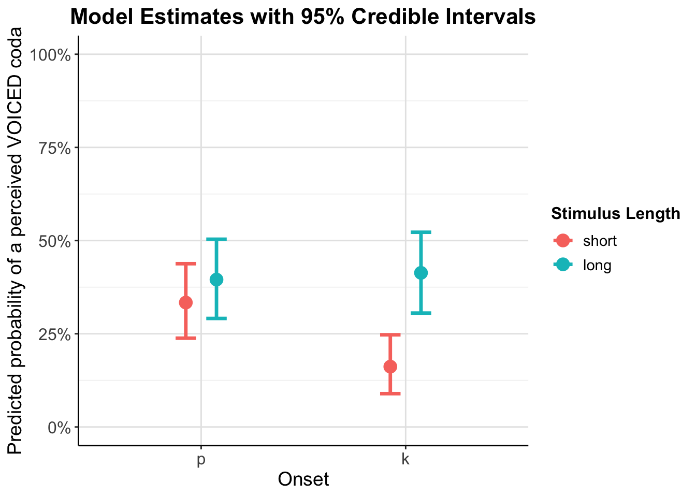

per_data <- read.csv("/Users/chandannarayan/GitHub/Burst_voice/Data/Master_Single_stim_long.csv", header=TRUE)
number_of_subs <- length(unique(per_data$sub))
number_of_subs## [1] 20library(lme4)## Warning: package 'lme4' was built under R version 4.3.3## Loading required package: Matrixlibrary(ggplot2)
library(ggeffects)## Warning: package 'ggeffects' was built under R version 4.3.3per_data$ons_con <- as.factor(per_data$ons_con)
#per_data_cor <- subset(per_data, Correct=="1")
library(tidyverse)## ── Attaching core tidyverse packages ──────────────────────── tidyverse 2.0.0 ──
## ✔ dplyr 1.1.4 ✔ readr 2.1.4
## ✔ forcats 1.0.0 ✔ stringr 1.5.0
## ✔ lubridate 1.9.3 ✔ tibble 3.2.1
## ✔ purrr 1.0.2 ✔ tidyr 1.3.0## ── Conflicts ────────────────────────────────────────── tidyverse_conflicts() ──
## ✖ tidyr::expand() masks Matrix::expand()
## ✖ dplyr::filter() masks stats::filter()
## ✖ dplyr::lag() masks stats::lag()
## ✖ tidyr::pack() masks Matrix::pack()
## ✖ tidyr::unpack() masks Matrix::unpack()
## ℹ Use the conflicted package (<http://conflicted.r-lib.org/>) to force all conflicts to become errors# Create a crosstab table with ons_con on rows, stim_length on columns
# with marginal totals for each row and column
crosstab_table <- per_data %>%
group_by(ons_con, stim_length) %>%
summarise(
percent_correct = mean(Correct) * 100,
n = n(),
.groups = "drop"
) %>%
# Add formatted column combining percentage and n
mutate(formatted = paste0(round(percent_correct, 1), "%\n(n=", n, ")")) %>%
select(ons_con, stim_length, formatted) %>%
# Pivot wider to get stim_length as columns
pivot_wider(names_from = stim_length, values_from = formatted)
# Calculate row totals (marginal totals for each ons_con)
row_totals <- per_data %>%
group_by(ons_con) %>%
summarise(
percent_correct = mean(Correct) * 100,
n = n(),
.groups = "drop"
) %>%
mutate(Total = paste0(round(percent_correct, 1), "%\n(n=", n, ")")) %>%
select(ons_con, Total)
# Calculate column totals (marginal totals for each stim_length)
col_totals <- per_data %>%
group_by(stim_length) %>%
summarise(
percent_correct = mean(Correct) * 100,
n = n(),
.groups = "drop"
) %>%
mutate(formatted = paste0(round(percent_correct, 1), "%\n(n=", n, ")")) %>%
select(stim_length, formatted) %>%
pivot_wider(names_from = stim_length, values_from = formatted) %>%
mutate(ons_con = "Total")
# Calculate overall total
overall_total <- per_data %>%
summarise(
percent_correct = mean(Correct) * 100,
n = n()
) %>%
mutate(Total = paste0(round(percent_correct, 1), "%\n(n=", n, ")")) %>%
pull(Total)
# Add row totals to the main table
final_table <- crosstab_table %>%
left_join(row_totals, by = "ons_con")
# Add column totals row
col_totals_row <- col_totals %>%
mutate(Total = overall_total)
# Combine everything
complete_table <- bind_rows(
final_table,
col_totals_row
)
# Display the table
print(complete_table)## # A tibble: 3 × 4
## ons_con long short Total
## <chr> <chr> <chr> <chr>
## 1 k "41.7%\n(n=120)" "83%\n(n=100)" "60.5%\n(n=220)"
## 2 p "40%\n(n=120)" "65.7%\n(n=140)" "53.8%\n(n=260)"
## 3 Total "40.8%\n(n=240)" "72.9%\n(n=240)" "56.9%\n(n=480)"# Alternative: Create a cleaner version without the \n formatting
clean_table <- per_data %>%
group_by(ons_con, stim_length) %>%
summarise(
percent_correct = round(mean(Correct) * 100, 1),
.groups = "drop"
) %>%
pivot_wider(names_from = stim_length, values_from = percent_correct) %>%
# Add row totals
left_join(
per_data %>%
group_by(ons_con) %>%
summarise(Total = round(mean(Correct) * 100, 1), .groups = "drop"),
by = "ons_con"
)
# Add column totals
col_totals_clean <- per_data %>%
group_by(stim_length) %>%
summarise(percent_correct = round(mean(Correct) * 100, 1), .groups = "drop") %>%
pivot_wider(names_from = stim_length, values_from = percent_correct) %>%
mutate(
ons_con = "Total",
Total = round(mean(per_data$Correct) * 100, 1)
)
clean_complete_table <- bind_rows(clean_table, col_totals_clean)
print("\nClean version (percentages only):")## [1] "\nClean version (percentages only):"print(clean_complete_table)## # A tibble: 3 × 4
## ons_con long short Total
## <chr> <dbl> <dbl> <dbl>
## 1 k 41.7 83 60.5
## 2 p 40 65.7 53.8
## 3 Total 40.8 72.9 56.9# Fit the mixed-effects logistic regression model with interaction term
per_model <- glmer(response_vc ~ stim_length * ons_con + (1 | vowel) + (1 | sub),
data = per_data,
family = binomial)
summary(per_model)## Generalized linear mixed model fit by maximum likelihood (Laplace
## Approximation) [glmerMod]
## Family: binomial ( logit )
## Formula: response_vc ~ stim_length * ons_con + (1 | vowel) + (1 | sub)
## Data: per_data
##
## AIC BIC logLik deviance df.resid
## 602.5 627.5 -295.2 590.5 474
##
## Scaled residuals:
## Min 1Q Median 3Q Max
## -1.0738 -0.7482 -0.5433 1.0769 2.8240
##
## Random effects:
## Groups Name Variance Std.Dev.
## sub (Intercept) 0.08612 0.2935
## vowel (Intercept) 0.08179 0.2860
## Number of obs: 480, groups: sub, 20; vowel, 3
##
## Fixed effects:
## Estimate Std. Error z value Pr(>|z|)
## (Intercept) -0.34975 0.25923 -1.349 0.1773
## stim_lengthshort -1.29401 0.32965 -3.925 8.66e-05 ***
## ons_conp -0.07167 0.26747 -0.268 0.7888
## stim_lengthshort:ons_conp 1.04443 0.42162 2.477 0.0132 *
## ---
## Signif. codes: 0 '***' 0.001 '**' 0.01 '*' 0.05 '.' 0.1 ' ' 1
##
## Correlation of Fixed Effects:
## (Intr) stm_ln ons_cn
## stm_lngthsh -0.413
## ons_conp -0.513 0.404
## stm_lngth:_ 0.323 -0.783 -0.635# Fully crossed model with random slopes/intercepts
per_model_full <- glmer(response_vc ~ stim_length * ons_con + (1 + stim_length + ons_con | sub),
data = per_data,
family = binomial, control=glmerControl(optimizer="bobyqa",
optCtrl=list(maxfun=2e5)))## boundary (singular) fit: see help('isSingular')summary(per_model_full)## Generalized linear mixed model fit by maximum likelihood (Laplace
## Approximation) [glmerMod]
## Family: binomial ( logit )
## Formula: response_vc ~ stim_length * ons_con + (1 + stim_length + ons_con |
## sub)
## Data: per_data
## Control: glmerControl(optimizer = "bobyqa", optCtrl = list(maxfun = 2e+05))
##
## AIC BIC logLik deviance df.resid
## 609.5 651.2 -294.7 589.5 470
##
## Scaled residuals:
## Min 1Q Median 3Q Max
## -1.1118 -0.7360 -0.4977 1.0950 2.3319
##
## Random effects:
## Groups Name Variance Std.Dev. Corr
## sub (Intercept) 0.27609 0.5254
## stim_lengthshort 0.67610 0.8223 -0.97
## ons_conp 0.02921 0.1709 0.94 -0.82
## Number of obs: 480, groups: sub, 20
##
## Fixed effects:
## Estimate Std. Error z value Pr(>|z|)
## (Intercept) -0.35298 0.22445 -1.573 0.1158
## stim_lengthshort -1.25801 0.38235 -3.290 0.0010 **
## ons_conp -0.08651 0.27690 -0.312 0.7547
## stim_lengthshort:ons_conp 1.02827 0.42750 2.405 0.0162 *
## ---
## Signif. codes: 0 '***' 0.001 '**' 0.01 '*' 0.05 '.' 0.1 ' ' 1
##
## Correlation of Fixed Effects:
## (Intr) stm_ln ons_cn
## stm_lngthsh -0.671
## ons_conp -0.519 0.293
## stm_lngth:_ 0.382 -0.681 -0.638
## optimizer (bobyqa) convergence code: 0 (OK)
## boundary (singular) fit: see help('isSingular')# Singularity problem with random effects structure, so random slopes/intercepts for just one variable
per_model_full <- glmer(response_vc ~ stim_length * ons_con + (1 + stim_length | sub),
data = per_data,
family = binomial, control=glmerControl(optimizer="bobyqa",
optCtrl=list(maxfun=2e5)))
summary(per_model_full)## Generalized linear mixed model fit by maximum likelihood (Laplace
## Approximation) [glmerMod]
## Family: binomial ( logit )
## Formula: response_vc ~ stim_length * ons_con + (1 + stim_length | sub)
## Data: per_data
## Control: glmerControl(optimizer = "bobyqa", optCtrl = list(maxfun = 2e+05))
##
## AIC BIC logLik deviance df.resid
## 603.9 633.1 -294.9 589.9 473
##
## Scaled residuals:
## Min 1Q Median 3Q Max
## -1.0729 -0.7333 -0.4820 1.1014 2.2931
##
## Random effects:
## Groups Name Variance Std.Dev. Corr
## sub (Intercept) 0.3554 0.5961
## stim_lengthshort 0.6303 0.7939 -0.95
## Number of obs: 480, groups: sub, 20
##
## Fixed effects:
## Estimate Std. Error z value Pr(>|z|)
## (Intercept) -0.35682 0.23441 -1.522 0.127947
## stim_lengthshort -1.24836 0.37823 -3.301 0.000965 ***
## ons_conp -0.07473 0.27306 -0.274 0.784325
## stim_lengthshort:ons_conp 1.00880 0.42346 2.382 0.017206 *
## ---
## Signif. codes: 0 '***' 0.001 '**' 0.01 '*' 0.05 '.' 0.1 ' ' 1
##
## Correlation of Fixed Effects:
## (Intr) stm_ln ons_cn
## stm_lngthsh -0.673
## ons_conp -0.578 0.358
## stm_lngth:_ 0.373 -0.685 -0.645# Generate predicted probabilities
per_data$predicted <- predict(per_model_full, type = "response") # Predicted probabilities
# Summarize predicted probabilities by `stim_length` and `ons_con`
summary_df <- aggregate(predicted ~ stim_length + ons_con, data = per_data,
FUN = function(x) c(mean = mean(x), se = sd(x)/sqrt(length(x))))
# Unpack the summary into a new data frame
summary_df <- do.call(data.frame, summary_df)
colnames(summary_df) <- c("stim_length", "ons_con", "mean_prob", "se_prob")
# Compute confidence intervals
summary_df$lower_ci <- summary_df$mean_prob - 1.96 * summary_df$se_prob
summary_df$upper_ci <- summary_df$mean_prob + 1.96 * summary_df$se_prob
# Plot the results with facets for ons_con
ggplot(summary_df, aes(x = stim_length, y = mean_prob)) +
geom_point(size = 2) +
geom_errorbar(aes(ymin = lower_ci, ymax = upper_ci), width = 0.2) +
facet_wrap(~ons_con) + # Create separate facets for each level of ons_con
scale_y_continuous(limits = c(0.1, 0.5)) + # Set y-axis limits from 0.1 to 0.5
labs(#title = "Predicted Probabilities by Stimulus Length and Onset Consonant",
x = "Onset VOT Length",
y = "Predicted Probability of Voiced Coda") +
theme_bw(base_size = 12)
# Plot the results with color-coded ons_con
ggplot(summary_df, aes(x = stim_length, y = mean_prob, color = ons_con)) +
geom_point(size = 4) +
geom_errorbar(aes(ymin = lower_ci, ymax = upper_ci), width = 0.2) +
scale_y_continuous(limits = c(0.1, 0.6)) + # Set y-axis limits from 0 to 1
labs(title = "Predicted Probabilities by Stimulus Length and Onset Consonant",
x = "VOT Length",
y = "Predicted Probability of Voiced Coda",
color = "Onset Consonant") +
theme_minimal()
###
# Install ggeffects if not already installed
install.packages("ggeffects")##
## The downloaded binary packages are in
## /var/folders/nv/72l7lgjs2s5d2y6bbl5wz6w40000gn/T//RtmpOfvDYg/downloaded_packages# Load the package
library(ggeffects)
# Generate predicted probabilities for `stim_length`
probabilities <- ggpredict(per_model, terms = "stim_length")## You are calculating adjusted predictions on the population-level (i.e.
## `type = "fixed"`) for a *generalized* linear mixed model.
## This may produce biased estimates due to Jensen's inequality. Consider
## setting `bias_correction = TRUE` to correct for this bias.
## See also the documentation of the `bias_correction` argument.# Print the probabilities
print(probabilities)## # Predicted probabilities of response_vc
##
## stim_length | Predicted | 95% CI
## ------------------------------------
## long | 0.41 | 0.30, 0.54
## short | 0.16 | 0.09, 0.27
##
## Adjusted for:
## * ons_con = k
## * vowel = 0 (population-level)
## * sub = 0 (population-level)# Plot the probabilities
plot(probabilities)
# Install if needed
# install.packages("brms")
# Trying out Bayes
library(brms)## Warning: package 'brms' was built under R version 4.3.3## Loading required package: Rcpp## Loading 'brms' package (version 2.22.0). Useful instructions
## can be found by typing help('brms'). A more detailed introduction
## to the package is available through vignette('brms_overview').##
## Attaching package: 'brms'## The following object is masked from 'package:lme4':
##
## ngrps## The following object is masked from 'package:stats':
##
## arper_model_bayes <- brm(response_vc ~ stim_length * ons_con + (1 + stim_length | sub),
data = per_data,
family = bernoulli(),
chains = 4,
iter = 2000,
cores = 4)## Compiling Stan program...## Trying to compile a simple C file## Running /Library/Frameworks/R.framework/Resources/bin/R CMD SHLIB foo.c
## using C compiler: ‘Apple clang version 12.0.5 (clang-1205.0.22.9)’
## using SDK: ‘MacOSX11.3.sdk’
## clang -arch arm64 -I"/Library/Frameworks/R.framework/Resources/include" -DNDEBUG -I"/Library/Frameworks/R.framework/Versions/4.3-arm64/Resources/library/Rcpp/include/" -I"/Library/Frameworks/R.framework/Versions/4.3-arm64/Resources/library/RcppEigen/include/" -I"/Library/Frameworks/R.framework/Versions/4.3-arm64/Resources/library/RcppEigen/include/unsupported" -I"/Library/Frameworks/R.framework/Versions/4.3-arm64/Resources/library/BH/include" -I"/Library/Frameworks/R.framework/Versions/4.3-arm64/Resources/library/StanHeaders/include/src/" -I"/Library/Frameworks/R.framework/Versions/4.3-arm64/Resources/library/StanHeaders/include/" -I"/Library/Frameworks/R.framework/Versions/4.3-arm64/Resources/library/RcppParallel/include/" -I"/Library/Frameworks/R.framework/Versions/4.3-arm64/Resources/library/rstan/include" -DEIGEN_NO_DEBUG -DBOOST_DISABLE_ASSERTS -DBOOST_PENDING_INTEGER_LOG2_HPP -DSTAN_THREADS -DUSE_STANC3 -DSTRICT_R_HEADERS -DBOOST_PHOENIX_NO_VARIADIC_EXPRESSION -D_HAS_AUTO_PTR_ETC=0 -include '/Library/Frameworks/R.framework/Versions/4.3-arm64/Resources/library/StanHeaders/include/stan/math/prim/fun/Eigen.hpp' -D_REENTRANT -DRCPP_PARALLEL_USE_TBB=1 -I/opt/R/arm64/include -fPIC -falign-functions=64 -Wall -g -O2 -c foo.c -o foo.o
## In file included from <built-in>:1:
## In file included from /Library/Frameworks/R.framework/Versions/4.3-arm64/Resources/library/StanHeaders/include/stan/math/prim/fun/Eigen.hpp:22:
## In file included from /Library/Frameworks/R.framework/Versions/4.3-arm64/Resources/library/RcppEigen/include/Eigen/Dense:1:
## In file included from /Library/Frameworks/R.framework/Versions/4.3-arm64/Resources/library/RcppEigen/include/Eigen/Core:19:
## /Library/Frameworks/R.framework/Versions/4.3-arm64/Resources/library/RcppEigen/include/Eigen/src/Core/util/Macros.h:679:10: fatal error: 'cmath' file not found
## #include <cmath>
## ^~~~~~~
## 1 error generated.
## make: *** [foo.o] Error 1## Start sampling# Check the model
summary(per_model_bayes)## Family: bernoulli
## Links: mu = logit
## Formula: response_vc ~ stim_length * ons_con + (1 + stim_length | sub)
## Data: per_data (Number of observations: 480)
## Draws: 4 chains, each with iter = 2000; warmup = 1000; thin = 1;
## total post-warmup draws = 4000
##
## Multilevel Hyperparameters:
## ~sub (Number of levels: 20)
## Estimate Est.Error l-95% CI u-95% CI Rhat
## sd(Intercept) 0.53 0.25 0.07 1.05 1.01
## sd(stim_lengthshort) 0.75 0.39 0.08 1.54 1.01
## cor(Intercept,stim_lengthshort) -0.61 0.40 -0.99 0.57 1.01
## Bulk_ESS Tail_ESS
## sd(Intercept) 936 1435
## sd(stim_lengthshort) 854 1347
## cor(Intercept,stim_lengthshort) 1307 1726
##
## Regression Coefficients:
## Estimate Est.Error l-95% CI u-95% CI Rhat Bulk_ESS
## Intercept -0.35 0.23 -0.82 0.09 1.00 2910
## stim_lengthshort -1.32 0.39 -2.11 -0.56 1.00 2102
## ons_conp -0.08 0.27 -0.60 0.46 1.00 3570
## stim_lengthshort:ons_conp 1.05 0.43 0.20 1.92 1.00 2832
## Tail_ESS
## Intercept 2832
## stim_lengthshort 2230
## ons_conp 3120
## stim_lengthshort:ons_conp 2880
##
## Draws were sampled using sampling(NUTS). For each parameter, Bulk_ESS
## and Tail_ESS are effective sample size measures, and Rhat is the potential
## scale reduction factor on split chains (at convergence, Rhat = 1).plot(per_model_bayes)
# Check the coding of stim_length
table(per_data$stim_length)##
## long short
## 240 240levels(factor(per_data$stim_length))## [1] "long" "short"# Check what the reference level is
contrasts(factor(per_data$stim_length))## short
## long 0
## short 1## Get the actual probabilities from the model
# Extract coefficients
fixef(per_model_bayes)## Estimate Est.Error Q2.5 Q97.5
## Intercept -0.35429130 0.2292038 -0.8210301 0.08957377
## stim_lengthshort -1.32221016 0.3876718 -2.1103305 -0.56499787
## ons_conp -0.07580756 0.2708458 -0.5987907 0.45607734
## stim_lengthshort:ons_conp 1.05230561 0.4306577 0.1950215 1.91700803# For long stimuli, ons_con at reference level:
intercept <- -0.34
prob_long_ref <- plogis(intercept) # plogis converts log-odds to probability
prob_long_ref # Should be around 0.42## [1] 0.4158095# For short stimuli, ons_con at reference level:
prob_short_ref <- plogis(intercept + (-1.34))
prob_short_ref # Should be around 0.17## [1] 0.1570955# For long stimuli, ons_con = "p":
prob_long_p <- plogis(intercept + (-0.08))
prob_long_p## [1] 0.3965168# For short stimuli, ons_con = "p":
prob_short_p <- plogis(intercept + (-1.34) + (-0.08) + 1.07)
prob_short_p## [1] 0.3340331# Load required libraries
library(brms)
library(ggplot2)
library(dplyr)
library(tidyr)
# Create a grid of predictor values to get estimates for each condition
# Get unique values of your predictors
stim_lengths <- unique(per_data$stim_length)
ons_cons <- unique(per_data$ons_con)
# Create prediction grid
pred_grid <- expand.grid(
stim_length = stim_lengths,
ons_con = ons_cons
)
# Get posterior predictions for each condition
# Get the full posterior draws first
posterior_draws <- posterior_epred(per_model_bayes,
newdata = pred_grid,
allow_new_levels = TRUE,
re_formula = NA) # This marginalizes over random effects
# Calculate summary statistics manually
posterior_summary <- apply(posterior_draws, 2, function(x) {
c(estimate = mean(x),
lower = quantile(x, 0.025),
upper = quantile(x, 0.975))
})
# Combine predictions with the grid
plot_data <- pred_grid %>%
mutate(
estimate = posterior_summary[1, ],
lower = posterior_summary[2, ],
upper = posterior_summary[3, ]
)
# Create the plot
ggplot(plot_data, aes(x = factor(ons_con, levels = c("p", "k")), y = estimate, color = factor(stim_length))) +
geom_point(size = 3, position = position_dodge(width = 0.1)) +
geom_errorbar(aes(ymin = lower, ymax = upper),
width = 0.05,
size = 1,
position = position_dodge(width = 0.1)) +
labs(
title = "Bayesian Model Estimates by Stimulus Length and Onset Condition",
x = "Onset Condition",
y = "Predicted probability of a perceived VOICED coda",
color = "Stimulus Length"
) +
theme_minimal() +
theme(
legend.position = "bottom",
plot.title = element_text(hjust = 0.5, size = 14),
axis.text = element_text(size = 12),
axis.title = element_text(size = 12),
legend.text = element_text(size = 11),
panel.grid.major = element_line(color = "grey90", size = 0.5),
panel.grid.minor = element_line(color = "grey95", size = 0.3)
) +
scale_y_continuous(limits = c(0, 1), labels = scales::percent_format())## Warning: Using `size` aesthetic for lines was deprecated in ggplot2 3.4.0.
## ℹ Please use `linewidth` instead.
## This warning is displayed once every 8 hours.
## Call `lifecycle::last_lifecycle_warnings()` to see where this warning was
## generated.## Warning: The `size` argument of `element_line()` is deprecated as of ggplot2 3.4.0.
## ℹ Please use the `linewidth` argument instead.
## This warning is displayed once every 8 hours.
## Call `lifecycle::last_lifecycle_warnings()` to see where this warning was
## generated.
# Alternative version with different styling
ggplot(plot_data, aes(x = factor(ons_con, levels = c("p", "k")), y = estimate, color = factor(stim_length))) +
geom_point(size = 4, position = position_dodge(width = 0.3)) +
geom_errorbar(aes(ymin = lower, ymax = upper),
width = 0.2,
size = 1.2,
position = position_dodge(width = 0.3)) +
labs(
title = "Model Estimates with 95% Credible Intervals",
x = "Onset",
y = "Predicted probability of a perceived VOICED coda",
color = "Stimulus Length"
) +
theme_classic() +
theme(
legend.position = "right",
plot.title = element_text(hjust = 0.5, size = 16, face = "bold"),
axis.text = element_text(size = 12),
axis.title = element_text(size = 14),
legend.title = element_text(size = 12, face = "bold"),
legend.text = element_text(size = 11),
panel.grid.major = element_line(color = "grey90", size = 0.5),
panel.grid.minor = element_line(color = "grey95", size = 0.3)
) +
scale_y_continuous(limits = c(0, 1), labels = scales::percent_format())
# If you want to see the actual data values used:
print("Prediction grid and estimates:")## [1] "Prediction grid and estimates:"print(plot_data)## stim_length ons_con estimate lower upper
## 1 short k 0.1618668 0.08933999 0.2472333
## 2 long k 0.4134481 0.30554504 0.5223785
## 3 short p 0.3337484 0.23818972 0.4379903
## 4 long p 0.3954227 0.29113699 0.5036658The negative coefficient for stim_lengthshort (-1.33) means that short stimulus length decreases the probability that response_vc = 1 In other words: long stimuli have higher probability of voiced coda perception than short stimuli
This matches your plot perfectly - you can see that the points for long stimuli (one color) are higher on the y-axis than the points for short stimuli (other color) for both onset conditions. In practical terms:
Long stimuli → higher probability of perceiving a voiced coda Short stimuli → lower probability of perceiving a voiced coda The interaction shows this length effect is stronger for /k/ onsets than /p/ onsets
# # Load required libraries
# library(brms) # Load brms first
# library(ggplot2)
# library(bayesplot) # Load bayesplot after brms
# rhat <- brms::rhat
#
# # 1. CONVERGENCE DIAGNOSTICS (Most Important)
# # Check Rhat values (should be < 1.01, ideally < 1.001)
# rhat_values <- rhat(per_model_bayes)
# print("Rhat values:")
# print(rhat_values)
#
# # Check effective sample sizes
# #ess_bulk <- neff_ratio(per_model_bayes)
# # For tail ESS, check the summary or use posterior package
# # Check convergence diagnostics
# summary(per_model_bayes) # This shows Bulk_ESS and Tail_ESS in the output
# model_summary <- summary(per_model_bayes)
# print("Effective Sample Size ratios (should be > 0.1):")
# print(paste("Bulk ESS ratio range:", round(min(ess_bulk), 3), "to", round(max(ess_bulk), 3)))
# print(paste("Tail ESS ratio range:", round(min(ess_tail), 3), "to", round(max(ess_tail), 3)))
#
# # 2. TRACE PLOTS (Visual convergence check)
# plot(per_model_bayes, pars = c("b_Intercept", "b_stim_lengthshort",
# "b_ons_conp", "b_stim_lengthshort:ons_conp"))
#
# # 3. POSTERIOR PREDICTIVE CHECKS
# # Check if model reproduces key patterns in the data
# pp_check(per_model_bayes, ndraws = 100)
#
# # More specific posterior predictive checks
# pp_check(per_model_bayes, type = "bars", ndraws = 500) # For binary data
# pp_check(per_model_bayes, type = "stat", stat = "mean", ndraws = 1000)
# pp_check(per_model_bayes, type = "stat_grouped",
# stat = "mean", group = "stim_length", ndraws = 500)
#
# # 4. MODEL COMPARISON (if you have alternative models)
# # Example: Compare to simpler models
# # per_model_simple <- brm(response_vc ~ stim_length + ons_con + (1|sub),
# # data = per_data, family = bernoulli())
# # loo_compare(loo(per_model_bayes), loo(per_model_simple))
#
# # 5. RESIDUAL DIAGNOSTICS
# # For mixed effects models, check residuals at different levels
# residuals_plot <- plot(per_model_bayes, type = "residuals")
# print(residuals_plot)
#
# # 6. RANDOM EFFECTS DIAGNOSTICS
# # Check if random effects are reasonable
# plot(per_model_bayes, pars = "^r_sub")
#
# # Check random effects correlations
# plot(per_model_bayes, pars = "cor")
#
# # 7. MCMC DIAGNOSTICS
# # Check for divergent transitions
# nuts_params <- nuts_params(per_model_bayes)
# print("Number of divergent transitions:")
# sum(subset(nuts_params, Parameter == "divergent__")$Value)
#
# # Energy diagnostics
# mcmc_nuts_energy(nuts_params)
#
# # 8. MODEL SUMMARY FOR REPORTING
# print("=== MODEL SUMMARY FOR REPORTING ===")
# summary(per_model_bayes)
#
# # 9. LEAVE-ONE-OUT CROSS-VALIDATION
# loo_result <- loo(per_model_bayes)
# print(loo_result)
#
# # Check for problematic observations
# plot(loo_result)
#
# # 10. PRIOR-POSTERIOR COMPARISON (if you set informative priors)
# # Check if priors were reasonable
# prior_summary(per_model_bayes)
#
# # 11. R-SQUARED (Bayesian version)
# bayes_R2(per_model_bayes)
#
# # 12. WHAT TO REPORT IN YOUR PAPER
# cat("
# === DIAGNOSTICS TO REPORT ===
#
# 1. CONVERGENCE:
# - All Rhat values < 1.01 (report range)
# - Effective sample sizes > 400 for all parameters
# - No divergent transitions
#
# 2. MODEL FIT:
# - Posterior predictive checks show model reproduces data patterns
# - LOO-CV information criterion for model comparison
# - Bayesian R-squared for explained variance
#
# 3. SAMPLE DESCRIPTION:
# - 4 chains, 2000 iterations each (1000 warmup)
# - Total of 4000 post-warmup draws
# - MCMC sampling using NUTS algorithm
#
# Example text for methods:
# 'Model convergence was assessed using Rhat statistics (all < 1.01)
# and effective sample sizes (all > 400). Posterior predictive checks
# confirmed the model adequately reproduced the observed data patterns.
# No divergent transitions were observed during sampling.'
# ")
#
# # 13. SPECIFIC CHECKS FOR YOUR MODEL
# # Check interaction effects visually
# marginal_effects(per_model_bayes, effects = "stim_length:ons_con")
#
# # Check if random effects structure is justified
# # Compare models with/without random slopes
# # This helps justify the complexity of your random effectsRhat < 1.01 for all parameters (yours look good: all ≈ 1.00) Effective sample sizes > 400 (yours are excellent: 862-4104) No divergent transitions
Posterior predictive checks (pp_check()) - shows if model reproduces data patterns LOO cross-validation for model comparison Bayesian R² for explained variance
Perfect Rhat values (all 1.00-1.01) High effective sample sizes Good mixing indicated by the diagnostics
The most important ones to run and report are the convergence checks (which you already have) and posterior predictive checks to show your model actually fits the data well.